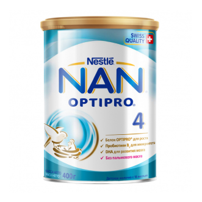

Улучшает пищеварение.Отличная альтернатива кефиру.
Функции желудочно-кишечного тракта малыша продолжают формироваться, поэтому в качестве
кисломолочного продукта в рационе стоит выбрать NAN® Кисломолочный 3.
Продукт создан с учетом потребностей детей после года, а благодаря биологической ферментации
приобретает мягкий
кисломолочный вкус, что делает его отличной альтернативой неадаптированным кисломолочным продуктам.
Важно знать!
Неадаптированные молочные продукты — например, кефир — могут спровоцировать проблемы с пищеварением и
способствовать плохому усвоению питательных веществ у ребенка.
Кефир
Состав не адаптирован под потребности ребенка, что может вызвать трудности с усвоением.
NAN® Кисломолочный 3
Cоздан специально с учётом потребностей ребенка в возрасте после года.
Оптимальное количество белка
Кефир может содержать избыток белка, что может дать излишнюю нагрузку на незрелые органы малыша. Детское молочко NAN® Кисломолочный 3 разработан с учетом потребностей
растущего организма: он содержит оптимальное количество высококачественного белка: ровно столько, сколько
необходимо ребенку после года.
Биоферментация
При производстве
детского молочка NAN® Кисломолочный 3
используется особая технология Биоферментации продукта с помощью живых молочнокислых бактерий. В результате
молочко приобретает дополнительные защитные свойства, помогая снизить риск развития кишечных инфекций, что
очень важно для детского организма.
Бифидобактерии BL
Полезные бактерии, важныедля формирования иммунитета, не всегда содержатся в кефире.В состав детского молочка NAN® Кисломолочный 3,
адаптированного к потребностям детского организма, входят бифидобактерии BL: их наличие
помогает улучшить усвояемость полезных веществ и благотворно влияет на пищеварение малыша.
Комфортное хранение
Жестяная банка защиет продукт от влаги, света и воздуха
Снаружи слой против вскрытия
Внутри фольга для герметичности и гигиены.
Удобная мерная ложечка в каждой банке.
А еще банка на 100% подходит для вторичной переработки.
Хотите узнать мнение эксперта?
Cоздан специально с учётом потребностей ребенка в возрасте после года.
Состав NAN® Кисломолочный 3
Калорийность / Энергетическая ценность 67 ккал / 280 кДж Осмоляльность
255 мОсм/кг
Пищевая ценность в 100 мл готового молочка
Основные компоненты
Белки
2
г
Углеводы
8,1
г
Лактоза
5,7
г
Мальтодекстрин
6,9
мг
Жирные кислоты
Жир
2,93
г
Линоленовая кислота
0,47
мг
α-Альфа-линоленовая
48,4
мг
Докозагексаеновая кислота
2,42
г
Пробиотики
B. Longum
>106
КОЕ/г
L. Rhamnosus
>106
КОЕ/г
Минеральные вещества
Минералы (зола)
0,47
г
Натрий
23,5
кг
Калий
92,7
мг
Хлориды
49,8
мг
Кальций
94,1
мг
Фосфор
52,6
мг
Магний
5,9
мг
Марганец
5,5
мкг
Селен
1,5
мкг
Железо
1,1
мг
Йод
20,1
мкг
Медь
0,055
мг
Цинк
0,8
мг
Витамины
Витамин А
76,1
мкг
Витамин Д
1,2
мкг
Витамин Е
1,5
мг
Витамин К
6,9
мкг
Витамин С
13,8
мг
Витамин В1
0,15
мг
Витамин В2
0,18
мг
Нифцин
0,7
мг
Витамин В6
0,086
мг
Фолиевая кислота
18
мкг
Пантотеновая кислота
0,83
мг
Витамин В12
0,19
мкг
Биотин
7
мкг
Прежде чем приступить к приготовлению напитка, вымойте руки.
Тщательно вымойте поильник и крышку, чтобы на них не осталось
следов напитка.
Прокипятите их в течение 5 минут. Накройте до использования.
Прокипятите питьевую воду в течение 5 минут и затем
остудите до 37 °C.
Руководствуясь таблицей кормления, определите необходимое количество воды.
Добавьте в поильник половину от необходимого объема теплой воды.
Руководствуясь таблицей кормления, добавьте точное количество мерных ложек порошка
в соответствии с возрастом вашего ребенка. Используйте только мерную ложку находящуюся в банке,
заполненную без горки.
Взболтайте поильник до полного растворения порошка.
Добавьте в поильник оставшуюся половину объема теплой воды.
Тщательно взболтайте поильник ещё раз.

После приготовления молочка банку с порошком следует плотно закрыть и хранить в сухом прохладном месте.
Отзывы о продукте
Другие продукты, которые могут быть вам интересны
NAN® 3 OPTIPRO®
Молочко NAN® 3 разработано специально для малышей от 12 месяцев. В период
активного познания мира ребенку крайне важно получать...
NAN® Гипоаллергенный 3
Чувствительный организм малыша не всегда может справиться с цельным белком коровьего молока.
Именно поэтому в состав молочка NAN® Гипоаллергенный 3 OPTIPRO®...

NAN® 4 OPTIPRO®
Детское молочко NAN® 4 для детей от 18 месяцев содержит всё
необходимое для здоровья малыша и помогает поддержать его иммунитет...
* ПОЛЕЗНАЯ ИНФОРМАЦИЯ BIO-ферментация — особая технология, в результате которой молочко
приобретает дополнительные защитные свойства, помогая снизить риск кишечных инфекций. Это процесс биологической
ферментации продукта с помощью живых молочнокислых бактерий. Бифидобактерии Bl — живые
пробиотические культуры, которые помогают укрепить иммунитет вашего малыша. OPTIPRO®-это
оптимизированный и по количеству и качеству белковый комплекс, который содержится в смеси
NAN®. Благодаря ему ребенок получает ровно столько белка, сколько нужно для
оптимального роста и развития, не перегружая незрелые органы.
*ВАЖНОЕ ПРИМЕЧАНИЕ Детский напиток NAN® Кисломолочный 3 предназначен для кормления
здоровых детей с 12 месяцев и не является заменителем грудного молока. Идеальной пищей для
грудного ребенка является молоко матери. Продолжайте грудное вскармливание как можно дольше после введения
прикорма.
*ПРЕДУПРЕЖДЕНИЕ Напиток следует готовить непосредственно перед кормлением. Точно следуйте инструкции по приготовлению.
Оставшийся после кормления разведенный напиток не подлежит хранению и последующему использованию. Во время
кормления необходимо поддерживать ребенка, чтобы он не поперхнулся. Когда ребенок подрастет, переходите
на кормление из поильника.Использование некипяченной воды и непрокипяченных поильников и чашечек,
а также неправильное хранение, транспортировка, приготовление и кормление могут привести к неблагоприятным
последствиям для здоровья ребенка. Продукт изготовлен из сырья, произведенного специально отобранными
поставщиками, без использования генетически модифицированных ингредиентов, консервантов, красителей и ароматизаторов.
Рекомендованные в таблице объемы потребляемой смеси и частота кормлений могут варьироваться в зависимости
от индивидуальных особенностей ребенка. Обратитесь за советом к медицинскому работнику.
Примечание: для сохранения количества живых бактерий, вскипяченную воду следует остудить примерно до температуры
тела (37°C) и затем добавить сухой порошок.
Для приготовления смеси необходимо использовать прилагаемую мерную ложку, заполненную без горки. Разведение
неправильного количества порошка — большего или меньшего по сравнению с количеством,
указанным в таблице — может привести к обезвоживанию организма ребенка или нарушению его
питания. Указанные пропорции нельзя изменять без совета медицинского работника.